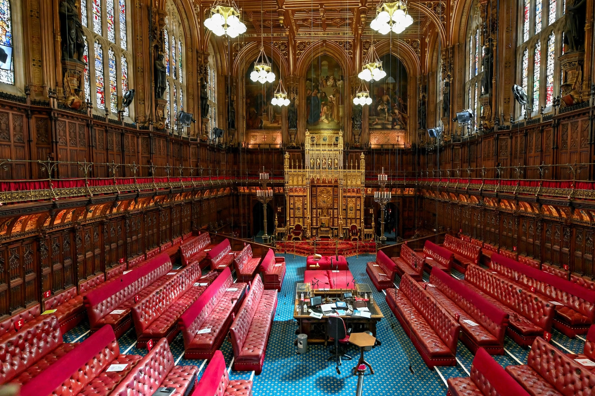

Salisbury Convention

In the Parliament of the United Kingdom, the Salisbury Convention (also called the Salisbury–Addison Convention) is a constitutional convention under which the unelected House of Lords should not oppose the second or third reading of any government legislation promised in its election manifesto. The convention rests on the democratic mandate of the elected House of Commons: because the manifesto was put to the voters, peers should not frustrate its implementation.
Origins
The convention is named after Robert Gascoyne-Cecil, 3rd Marquess of Salisbury, the Conservative leader in the Lords in the late 19th century, who held that the Lords should defer to a government with a fresh electoral mandate. It was formalised in 1945, when the Labour government of Clement Attlee faced a large Conservative majority in the Lords: Viscount Addison, Labour's leader in the Lords, and the Marquess of Salisbury agreed that manifesto bills would be allowed to pass, in return for the government not overloading the Lords' programme.
Scope and disputes
The convention does not prevent peers from amending bills, and its application to coalition governments, minority governments and legislation absent from the manifesto is contested. A 2006 report by a Joint Committee on Conventions affirmed the convention while noting its limits; after the 2010 coalition election there was debate about whether it applied to measures appearing in neither party's manifesto.
See also: Party platform, House of Lords, Constitutional convention.